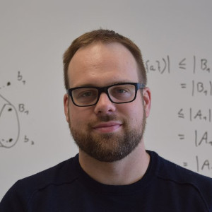

L'équipe
Quatre professeurs-chercheurs sont membres du LIF et y supervisent une dizaine d'étudiants de tous les cycles. Au total, depuis sa création, le LIF a vu passer plus d'une soixantaine d'étudiants venant du Québec, de France, de Chine et d'Afrique.
Professeurs
 Sylvain Hallé, Ph.D. est titulaire de la Chaire de recherche du Canada en spécification, test et vérification de systèmes informatiques et professeur titulaire au Département d'informatique et de mathématique de l'UQAC, où il travaille depuis 2010. Auparavant, il a obtenu un doctorat en informatique de l'UQAM et a travaillé comme chercheur postdoctoral à l'University of California, Santa Barbara, de 2008 à 2010. Le Pr. Hallé est le récpiendaire de nombreux prix internationaux pour ses recherches sur le test et la vérification d'applications, et s'est mérité deux Médailles académiques du Gouverneur général du Canada, l'une en 1997 et l'autre en 2009.
Sylvain Hallé, Ph.D. est titulaire de la Chaire de recherche du Canada en spécification, test et vérification de systèmes informatiques et professeur titulaire au Département d'informatique et de mathématique de l'UQAC, où il travaille depuis 2010. Auparavant, il a obtenu un doctorat en informatique de l'UQAM et a travaillé comme chercheur postdoctoral à l'University of California, Santa Barbara, de 2008 à 2010. Le Pr. Hallé est le récpiendaire de nombreux prix internationaux pour ses recherches sur le test et la vérification d'applications, et s'est mérité deux Médailles académiques du Gouverneur général du Canada, l'une en 1997 et l'autre en 2009.
 Fehmi Jaafar, Ph.D. est professeur agrégé à l'Université du Québec à Chicoutimi et professeur associé à l'Université Concordia et l'Université Laval. Il est le vice-président du comité sur l'Internet des objets et technologies connexes au Conseil canadien des normes. Auparavant, il était un chercheur au Centre de recherche en Informatique de Montréal (CRIM), professeur adjoint à l'Université Concordia d'Edmonton, et chercheur postdoctoral à Queen's University et à Polytechnique Montréal. Après avoir obtenu un doctorat en informatique de l'Université de Montréal, le Pr. Jaafar s'est spécialisé dans des travaux de recherche en cybersécurité. Il s'intéresse à la cybersécurité dans l'Internet des objets et à l'application des techniques d'apprentissage automatique en cybersécurité. Il a établi des programmes de recherche en collaboration avec Défense Canada, Sécurité publique Canada, le Conseil de recherches en sciences naturelles et en génie du Canada, et des partenaires industriels et universitaires canadiens et étrangers.
Fehmi Jaafar, Ph.D. est professeur agrégé à l'Université du Québec à Chicoutimi et professeur associé à l'Université Concordia et l'Université Laval. Il est le vice-président du comité sur l'Internet des objets et technologies connexes au Conseil canadien des normes. Auparavant, il était un chercheur au Centre de recherche en Informatique de Montréal (CRIM), professeur adjoint à l'Université Concordia d'Edmonton, et chercheur postdoctoral à Queen's University et à Polytechnique Montréal. Après avoir obtenu un doctorat en informatique de l'Université de Montréal, le Pr. Jaafar s'est spécialisé dans des travaux de recherche en cybersécurité. Il s'intéresse à la cybersécurité dans l'Internet des objets et à l'application des techniques d'apprentissage automatique en cybersécurité. Il a établi des programmes de recherche en collaboration avec Défense Canada, Sécurité publique Canada, le Conseil de recherches en sciences naturelles et en génie du Canada, et des partenaires industriels et universitaires canadiens et étrangers.
 Hugo Tremblay, Ph.D. est professeur adjoint au Département d'informatique et de mathématique de l'UQAC depuis 2022. Il a obtenu son doctorat en mathématique à l'UQÀM en 2017 avant de travailler comme chercheur postdoctoral à l'Université d'Ottawa, puis comme professeur substitut à l'UQAC. Ses travaux de recherche se concentrent en géométrie digitale, en théorie des graphes et en algorithmique.
Sébastien Gaboury, Ph.D. est professeur agrégé au Département d'informatique et de mathématique de l'UQAC depuis 2012. Il est l'auteur de près d'une centaine de publications scientifiques dans des journaux et des conférences internationales. Le Pr. Gaboury était en 2013 le récipiendaire d'une Médaille académique du Gouverneur général du Canada pour ses travaux de doctorat en mathématiques fondamentales.
Étudiants
La contribution des étudiants au LIF est indispensable! Tous les projets de recherche et de développement qu'on y mène sont doublés d'une expérience pédagogique pour les étudiants qui y participent.
Étudiants au doctorat
- Ricardo Ávila
- Sarika Machhindra Kadam
- Eduardo Mendes de Oliveira
- Mithunvenkatesh Mohankumar
- Marcela Santos
Étudiants à la maîtrise
- Alexandre Lambert
- Amadou Kabiné Traore
Étudiants de premier cycle
- Véronique Du Paul, bourse de recherche de premier cycle du CRSNG
- Sophie Lalancette, bourse de recherche de premier cycle du CRSNG
- Baptiste Wetterwald
- Alexander Yanovskyy
Anciens étudiants
Merci à tous nos anciens étudiants depuis la création du laboratoire en 2012. (Contactez-nous si votre statut a changé ou si on vous a oublié!)
Étudiants au doctorat
- Oussama Beroual
- Quentin Betti
- Edmond La Chance
- Bianca Minetto Napoleão
- Éric Lunaud Ngoupé
- Jalves Nicácio
- Asma Razgallah
- Massiva Roudjane
- Rania Taleb
Étudiants à la maîtrise (mémoires, stages et essais)
- Mewena Awesso, stage de 2e cycle
- Souhail Ben Ali, en stage chez Ubisoft
- Mohamed Racem Boussaha
- Jérôme Calvar
- Tom Canac
- Guillaume Demarty
- Imen Doudech
- Ayyoub Gannoun, stage de 2e cycle
- Francis Guérin
- Demétrio Guilard
- Bassam Khorchani
- Amadou Makhtar Tall
- Fabien Maronnaud
- Chafik Meniar
- Aouatef Mrad
- Mohamed Yliès Rahim
- Julien Roux, stage de 2e cycle
- Lei Shi
- Maxime Soucy-Boivin (à l'emploi du Gouvernement du Québec)
- Jérémy Spieldenner, en stage chez Eckinox Média
- Youssef Achkar Touzani, stage de 2e cycle
- Raphaël Tremblay-Lessard (à l'emploi du Cégep de Chicoutimi)
- Jason Vallet, stage de 2e cycle
- Simon Varvaressos, récipiendaire d'une bourse d'excellence du Fonds de recherche Québec
- Benjamin Vignau
- Kun Xie
Étudiants de premier cycle
- Valentin Bailleul
- Helloïs Barbosa
- Gabrielle Bastien
- Antoine Berthier
- Nicolas Bergeron
- Alexis Colin
- Sarah Desmeules, bourse de recherche de premier cycle du CRSNG
- Hans Darmstadt-Bélanger, bourse de recherche de premier cycle du CRSNG
- Vincent Dufour, bourse de recherche de premier cycle du CRSNG
- Vincent Gagnon, bourse de recherche de premier cycle du CRSNG
- Quentin Gouy
- Corentin Kirscher
- Killian Lachaux
- Raphaël Laguerre, en échange avec Télécom Saint-Étienne (France)
- Alexandre Larouche
- Kim Lavoie, bourse de recherche de premier cycle du CRSNG; à l'emploi du Cégep de Chicoutimi
- Gabriel Le Breton, cofondateur de Totema Studio
- Matthieu Michenot
- Daehli Nadeau-Otis
- Gaël Perrot
- Marc-Antoine Plourde, bourse de recherche de premier cycle du CRSNG
- Martin Renaud
- Dominic Vaillancourt, à l'emploi de Behaviour Interactive
- Guillaume Vassal, en échange avec Télécom Saint-Étienne (France)
- Benjamin Vignau